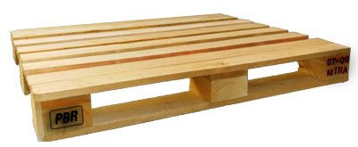
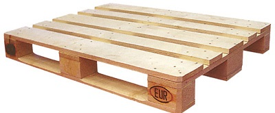
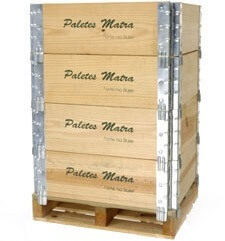

Inicio
Inicio Serviços
Serviços Produtos
Produtos Galeria
Galeria Fale conosco
Fale conosco
Tratamento HT

Galpão Reforma

Paletes PBR
Há mais de 40 anos a MATRA DO BRASIL é uma empresa especializada na produção de paletes de madeira, destinados para venda e locação. Tendo como principal objetivo, a busca incessante de produtos e serviços que atendam as necessidades de seus clientes
A MATRA conta com profissionais extremamente qualificados que lhe auxiliarão na melhor escolha para a sua necessidade de paletes de madeiras, através de uma estrutura sólida e eficaz. Conta com equipamentos nacionais e importados, com capacidade produtiva de até 210.000 paletes/mês.
PALETES DE USOS MUTIPLOS:
Paletes produzidos conforme especificações do cliente ou projeto exclusivo, normalmente para uso interno.
PALETE PBR:
Palete Padrão Brasil 1000 x 1200 mm, produzido conforme especificações técnicas para o Palete de Distribuição Nacional.
Paletes ONE-WAY (Descartável):
Paletes produzidos para fim específico (peso e tipo de carga), não retornável.
A MATRA é certificada pelo IBAMA e CETESB, credenciada pelo CPP/ABRAS para a fabricação do palete PBR e APME-Bélgica, para a fabricação dos paletes CP no Brasil.





© Copyright Matra do Brasil. 2016 Todos os direitos reservados.
Tel: 11 4646 - 1120 / 11 4648 - 6120 / 11 4648 - 6654